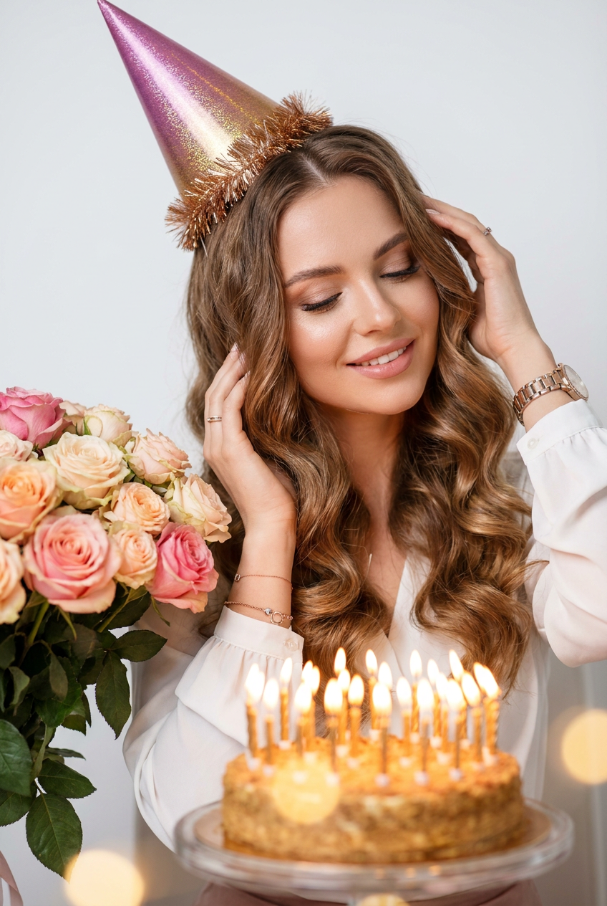
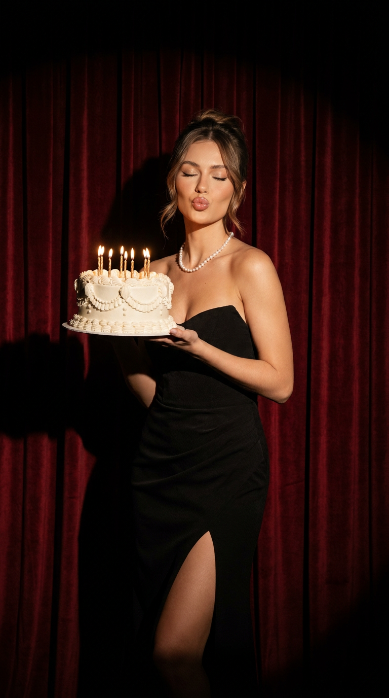
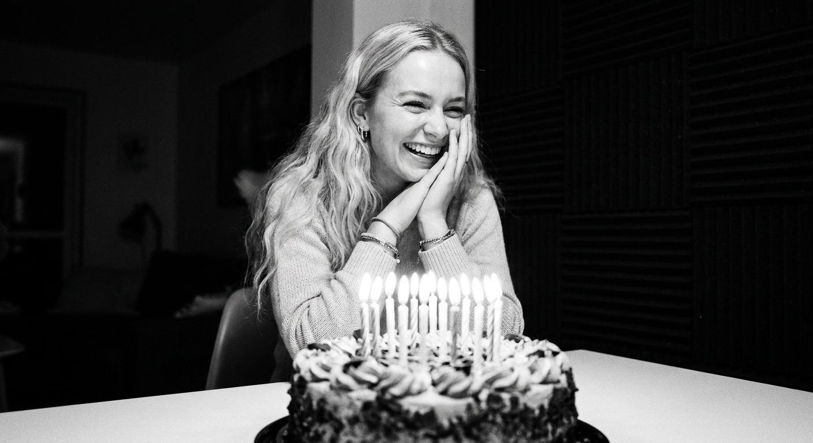
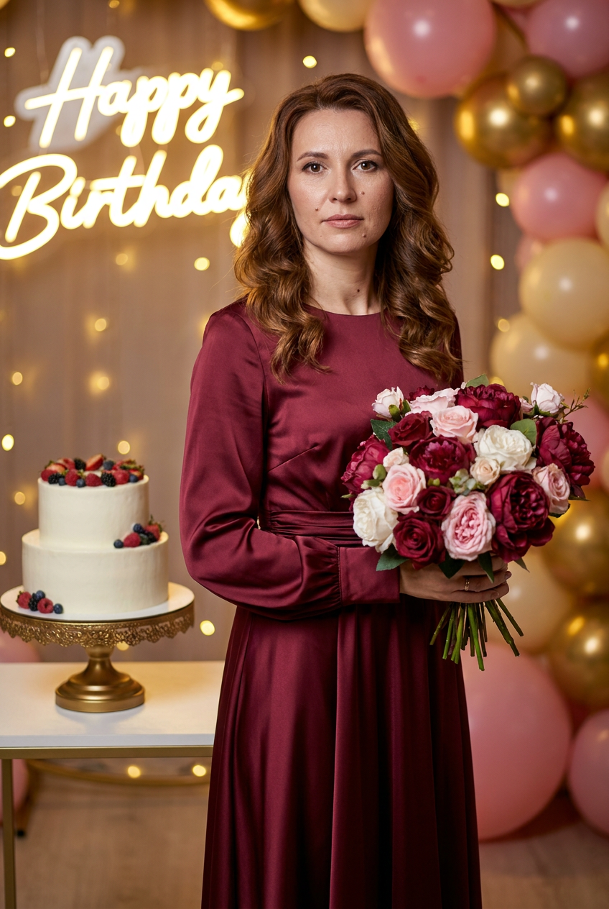
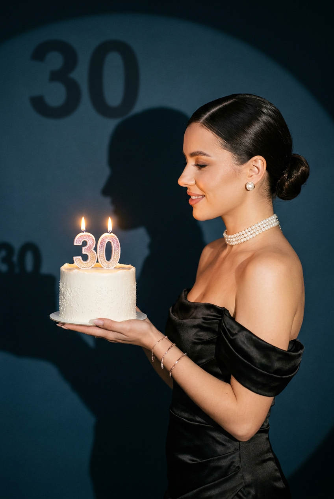
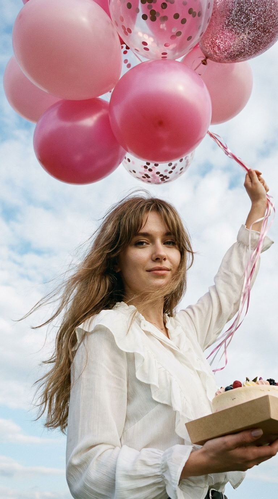
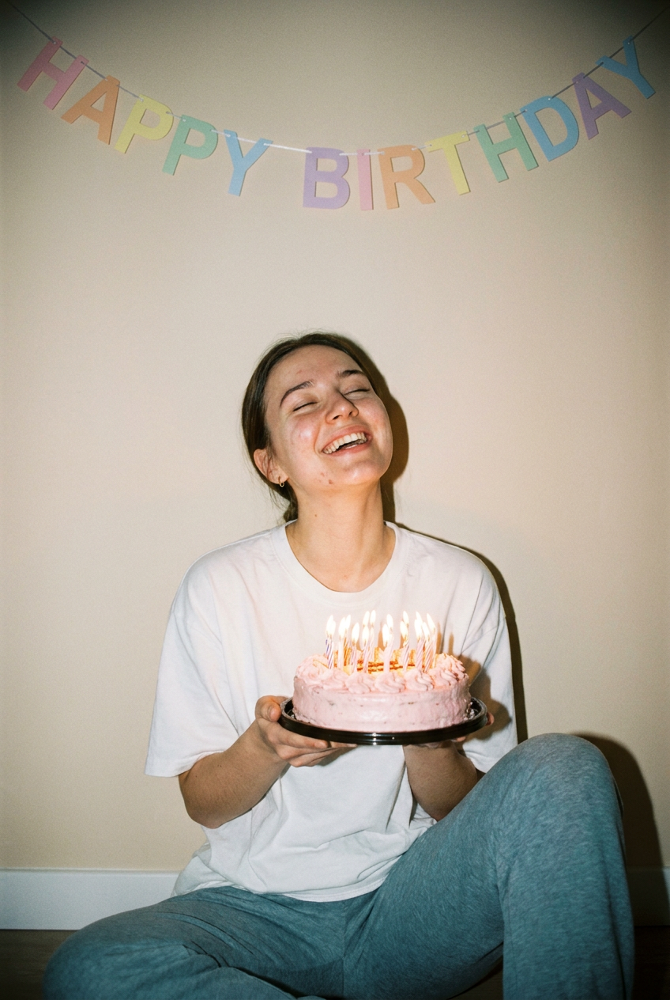
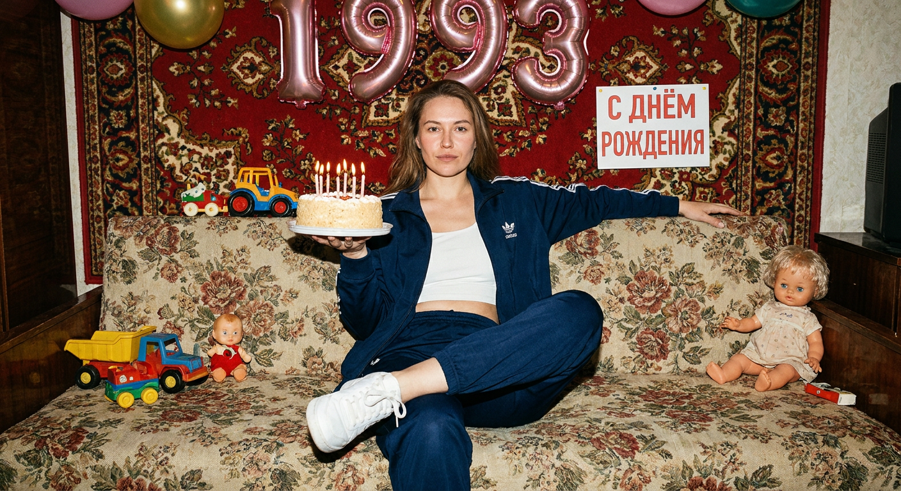
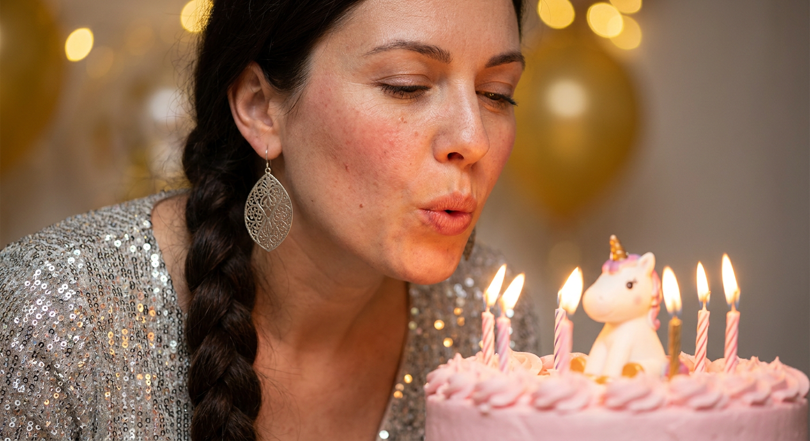
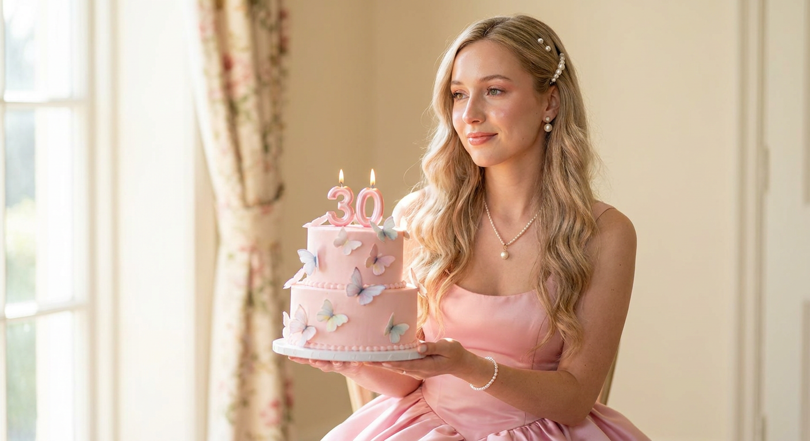

ИИ-фото с тортом: 10 промптов для нейросети

Праздничное фото хочется сохранить красиво, но подходящий наряд, торт, свет и фотографа не всегда удаётся собрать в одном месте. Генерация помогает получить нужный кадр за несколько попыток — с любимым образом, свечами и настроением, которое сложно поймать случайным снимком.
В подборке — 10 готовых сценариев для ИИ-фото с тортом: гламурная вечеринка, чёрно-белая съёмка, домашний кадр со вспышкой, юбилейный портрет, платье с цветами и эффектный снимок с цифрой 30. Подставьте свой референс лица и при необходимости уточните детали внешности.
Как сгенерировать такое фото: пошагово
Нужен снимок анфас при ровном свете, лицо в кадре целиком, без тёмных очков и головных уборов. Разрешение от 1000 пикселей по короткой стороне. Чем чётче исходник, тем точнее модель повторит черты.
Выберите сценарий ниже и нажмите «Копировать» — текст уйдёт в буфер целиком, вместе с командой сохранения внешности. Эта команда стоит первой строкой и отвечает за то, чтобы на выходе было ваше лицо, а не случайное.
Кнопка «Сгенерировать» рядом с каждым промптом открывает модель в новой вкладке. Nano Banana Pro работает с референсом лица — в отличие от моделей, которые генерируют портрет с нуля и узнаваемость теряют.
Промпт — в поле ввода, портрет — через загрузку референса. Порядок значения не имеет, но без референса команда сохранения внешности работать не будет: модели нечего сохранять.
Для сторис и ленты берите 9:16, для превью и обложек — 4:3. Первый результат редко идеален: если поза или свет ушли не туда, поправьте соответствующую часть промпта и запустите заново. Обычно хватает двух-трёх итераций.
10 промптов для генерации
1. Праздничный колпак и волны
Строго сохранить внешность по загруженному референсу: черты лица, пропорции, мимику и текстуру кожи без изменений. Вертикальный ультрареалистичный fashion-lifestyle кадр с лицом из загруженного референса. В центре — женщина, слегка развернувшаяся в сторону; взгляд опущен или глаза закрыты, на лице мягкая довольная полуулыбка. Одна рука поднята к уху или виску, вторая находится рядом с лицом в жесте поздравления. Длинные ухоженные волосы уложены крупными объёмными волнами, отдельные пряди выглядят естественно и блестят. Белая блузка или топ, лаконичные украшения, элегантные часы, тонкие кольца и браслеты. На голове высокий праздничный колпак пурпурно-розового цвета с золотистыми переливами, лёгкой текстурой и блёстками; край отделан пушистой золотисто-бронзовой бахромой. В руках — праздничный торт со свечами, аккуратный кремовый декор. Мягкий студийный свет, реалистичная кожа, высокая детализация, малая глубина резкости, вертикальная композиция 9:16.
2. Торт на театральной сцене

Строго сохранить внешность по загруженному референсу: черты лица, пропорции, мимику и текстуру кожи без изменений. Фотореалистичная вертикальная fashion-съёмка в эстетике glamorous birthday party и luxury magazine. Женщина с лицом из референса стоит перед роскошными тёмно-красными театральными шторами. На ней элегантное чёрное вечернее платье без бретелей с разрезом, многорядное жемчужное ожерелье и собранная причёска с мягкими прядями у лица. Глаза закрыты, губы сложены бантиком, будто она посылает воздушный поцелуй; поза игривая, но уверенная. В одной руке — белый праздничный торт с декоративными элементами и зажжёнными свечами. Тёплый направленный spotlight создаёт выразительный контраст света и тени, на стене видны мягкие тени. Кинематографичная атмосфера винтажной вечеринки, естественный макияж с глянцевыми губами, натуральная текстура кожи, мягкий фон, профессиональная студийная съёмка, объектив 85 мм, кадр 9:16. Исключить размытие, пластмассовую кожу, CGI, лишние пальцы и деформации лица.
3. Свечи в чёрно-белом кино

Строго сохранить внешность по загруженному референсу: черты лица, пропорции, мимику и текстуру кожи без изменений. Чёрно-белая фотография с плёночной фактурой, снятая в интерьере квартиры. На переднем плане, на белом столе, находится круглый деньрожденческий торт с кремовой орехово-шоколадной текстурой по краям. Сверху в один ряд установлено много свечей — примерно 8–12, все они горят, а яркое пламя подсвечивает крем и верхушку торта. На заднем плане сидит молодая женщина с лицом из референса: она смеётся, улыбается, слегка прищуривает глаза и смотрит на свечи. Руки сведены у лица или подбородка, пальцы касаются щеки — жест лёгкого смущения и радости. На ней светлый домашний свитер, на запястьях браслеты, в ушах небольшие серьги. Длинные светлые волнистые волосы. Справа видна тёмно-серая или чёрная стена с вертикальными панелями. Выраженный контраст пламени и теней, натуральная зернистость плёнки, мягкая оптика, реалистичные фактуры крема, свечей и кожи.
4. Букет вместо праздничной открытки

Строго сохранить внешность по загруженному референсу: черты лица, пропорции, мимику и текстуру кожи без изменений. Фотореалистичный портрет в полный рост на праздничном мероприятии, вертикальный кадр. Женщина с лицом из загруженного изображения стоит прямо или слегка разворачивает корпус, а голову поворачивает к камере. Выражение спокойное и элегантное, допустима лёгкая улыбка. В руках она держит пышный букет из бордовых, розовых и белых роз и пионов; стебли скрыты упаковкой или лентой. На ней длинное атласное платье винного оттенка, цвета марсала или тёмного красного вина. Длинные рукава, присборенный пояс на талии, струящаяся ткань с мягкими бликами и естественными складками. Волнистые каштановые волосы лежат на плечах и спине, макияж вечерний, но аккуратный. Дополнить образ небольшими изящными золотыми серьгами или украшениями с камнями. В композиции присутствует праздничный торт на отдельном столике или в руках рядом с букетом, свечи создают небольшие тёплые блики. Мягкий кинематографичный свет, натуральная кожа, высокая детализация.
5. Юбилейный профиль с тортом

Строго сохранить внешность по загруженному референсу: черты лица, пропорции, мимику и текстуру кожи без изменений. Вертикальный студийный портрет в эстетике «юбилей 30», с чистым фоном, кинематографичным светом и мягкими тенями. Женщина стоит справа в профиль, повернувшись влево, и смотрит на торт. На лице спокойная лёгкая улыбка. Обеими руками она поддерживает круглый праздничный торт на уровне груди или талии; торт украшен кремовым декором, тонкими надписями и свечами с цифрой 30. Волосы тёмно-каштановые или почти чёрные, гладко уложены и собраны в хвост либо низкий пучок с прямым пробором. Вечерний макияж с выразительными стрелками, подчёркнутыми ресницами, аккуратными бровями и нюдовыми или розовыми губами. Чёрный атласный наряд с открытыми плечами, тонкими бретелями и красивым блеском ткани. На шее многорядное жемчужное колье-чокер, в ушах небольшие жемчужные серьги, на запястьях тонкие браслеты. Детализировать кожу, волосы, украшения и поверхность торта; использовать объектив 85 мм, вертикальный формат 9:16.
6. Торт на фоне неба

Строго сохранить внешность по загруженному референсу: черты лица, пропорции, мимику и текстуру кожи без изменений. Ультрареалистичный вертикальный портрет 9:16 молодой женщины с лицом из референса на фоне открытого голубого неба. Камера находится значительно ниже уровня лица и направлена вверх, съёмка с нижнего ракурса frog’s-eye view: такой угол визуально удлиняет силуэт и делает фигуру статной, а небо занимает почти весь фон. Женщина стоит по центру, корпус развёрнут прямо, в руках держит праздничный светлый торт с кремовым декором и горящими свечами. Длинные волосы уложены в каскадную стрижку с объёмной чёлкой-шторкой; отдельные пряди слегка разлетаются от ветра. Макияж естественный, акцент на длинных ресницах. Ногти длинные, молочного оттенка, форма «балерина». Платье или светлый праздничный наряд выглядит воздушно и аккуратно, ткань слегка движется на ветру. Солнечный естественный свет, живые волосы, реалистичная кожа, чёткие свечи и крем, без лишних деталей ландшафта, без изменения индивидуальных черт лица.
7. Торт со вспышкой дома

Строго сохранить внешность по загруженному референсу: черты лица, пропорции, мимику и текстуру кожи без изменений. Портрет в вертикальной композиции с плёночным вайбом, лёгкой зернистостью, небольшой передержкой и мягкими тенями. Фон — простая светло-бежевая стена без заметных деталей. В центре сидит на полу молодая девушка с лицом из референса, прислонившись к стене; одна нога согнута в колене, поза расслабленная и естественная. На ней белая оверсайз-футболка, спортивные серо-голубые штаны и маленькие серьги-кольца. Длинные каштановые волосы прямые или слегка волнистые. Голова запрокинута, глаза закрыты, улыбка широкая и искренняя. Обеими руками она держит небольшой круглый торт, расположенный в нижней или средней части кадра и частично закрывающий грудь. По краям и бокам торта — розовая кремовая глазировка, сверху ровным рядом много горящих свечей с хорошо заметным пламенем. Свет похож на прямую вспышку: тёплые блики на коже, контрастные тени, слегка пересвеченные участки, реалистичная домашняя атмосфера.
8. Дерзкий кадр из девяностых

Строго сохранить внешность по загруженному референсу: черты лица, пропорции, мимику и текстуру кожи без изменений. Фотореалистичный портрет в эстетике российской середины 1990-х, снятый на плёнку с прямой вспышкой. Вертикальная композиция примерно до колен или немного ближе. Женщина с лицом из оригинального референса сидит на старом диване с цветочным узором, закинув одну ногу на другую. Тело слегка развёрнуто в сторону, но взгляд направлен прямо в объектив; выражение уверенное, свободное, с лёгким вызывающим настроением. На заднем плане висит традиционный красный ковёр, рядом видны детали простой домашней комнаты: деревянная мебель, плотные шторы, немного бытовой фактуры, без современной стилизации. В руках женщина держит круглый праздничный торт со светлым кремом, свечами и слегка неровным домашним декором. Одежда может быть нарядной, но в духе эпохи — блестящая блузка или тёмное платье с заметными аксессуарами. Жёсткая вспышка, выраженные тени, лёгкая передержка, плёночное зерно, естественная текстура кожи, винтажные цвета и ощущение настоящего семейного снимка.
9. Серебряное платье и свечи

Строго сохранить внешность по загруженному референсу: черты лица, пропорции, мимику и текстуру кожи без изменений. Крупный портрет по грудь женщины с лицом из референса, снятый в момент, когда она слегка наклоняется к торту и дует на горящие свечи. Губы сложены трубочкой, щёки немного надуты, взгляд прищурен и сосредоточен на пламени, на скулах заметен лёгкий румянец. На женщине блестящее серебристое платье с вышивкой, пайетками, стразами и декоративными узорами. Через плечо спадает роскошная плетёная коса, заплетённая объёмно и аккуратно. В ушах — большие ажурные золотые или серебряные серьги с узорными деталями. Макияж вечерний: персиковые румяна, чёрная крылатая стрелка на верхнем веке, естественные ресницы и блеск для губ. Перед лицом расположен розовый праздничный торт с маленькой милой фигуркой сверху — ангелом, единорогом или сердцем; свечи горят, часть пламени уже гаснет от дыхания. Мягкий праздничный свет, реалистичные искры и отражения на ткани, малая глубина резкости, детальная кожа, вертикальный формат.
10. Розовый торт с цифрой 30

Строго сохранить внешность по загруженному референсу: черты лица, пропорции, мимику и текстуру кожи без изменений. Фотореалистичный высокодетализированный портрет молодой женщины в элегантном розовом бальном платье. В руках она держит двухъярусный розовый торт, украшенный сахарными бабочками; сверху горят свечи в форме цифры «30». Женщина смотрит немного в сторону от камеры, веки расслаблены, на лице мягкая полуулыбка. Длинные светло-русые волосы уложены волнами, локоны лежат на плечах и спине, в причёске закреплены жемчужные шпильки. Образ дополняют жемчужная подвеска на шее и изящные серьги с жемчугом. Платье пышное, с корсетом, плавными складками и лёгким сатиновым блеском, оттенок — нежно-розовый, без кислотной насыщенности. Торт должен выглядеть съедобным: ровные ярусы, аккуратный крем, тонкие детали бабочек, натуральное пламя свечей и мягкие отражения на глазури. Студийный кинематографичный свет, чистый праздничный фон, натуральная кожа с видимой текстурой, реалистичные руки, правильные пропорции, вертикальная композиция 9:16.
Что важно учесть в этом стиле
Фото с тортом держится на трёх вещах: понятном действии, выразительном свете и масштабе десерта. Если героиня задувает свечи, поднесите торт к лицу и отдельно опишите губы, щёки и направление взгляда. Для портрета с тортом в руках укажите его высоту относительно груди или талии — так нейросети реже делают десерт слишком большим.
Свет лучше задавать конкретно: прямая вспышка, тёплый spotlight, пламя свечей или солнце снизу. Для реалистики пригодятся объектив 85 мм, вертикальный формат 9:16, малая глубина резкости и натуральная текстура кожи. Если используется референс лица, сначала добейтесь правильной анатомии на простом фоне, а затем добавляйте сложное платье, руки и декор.
Идеи для вариаций
- Замените торт на капкейки, высокий чизкейк или десерт с зеркальной глазурью.
- Поставьте свечи в форме другой даты, имени или короткого слова.
- Перенесите сцену на крышу, в пустой кинотеатр, зимнюю гостиную или сад с гирляндами.
- Сделайте серию в одной одежде: портрет, кадр со свечами и снимок с первым кусочком торта.
- Поменяйте настроение на тихий семейный вечер, дерзкую вечеринку или романтичный юбилей.
Как собрать свой промпт
Начните с формата и типа кадра: крупный портрет, по пояс, полный рост или профиль. Затем опишите действие героини, одежду, волосы, торт и фон. Отдельной фразой задайте свет и оптику — например: «прямая вспышка, объектив 50 мм, вертикальный кадр 9:16, мягкое плёночное зерно».
Для сложной сцены лучше не перегружать описание редкими художественными терминами. Сначала зафиксируйте лицо и позу, после этого добавьте украшения, свечи и мелкий декор. Если генератор поддерживает референс, используйте одно чёткое фото анфас при равномерном освещении. На проверку рук, свечей и надписи заложите 4–8 генераций: именно эти детали чаще всего требуют повторов.
Ошибки, из-за которых кадр не получается
- Слишком много задач в одной сцене. Когда в промпте одновременно указаны сложная поза, узорная одежда, торт, букет и несколько источников света, модель начинает смешивать детали.
- Не задан размер торта. Укажите «небольшой торт на уровне груди» или «двухъярусный торт, занимающий треть кадра», иначе десерт может перекрыть лицо.
- Нет описания рук. Для кадров с подносом и свечами добавьте положение каждой руки и попросите пять пальцев без лишних конечностей.
- Надпись и цифры без проверки. Свечи «30» и праздничный текст часто искажаются, поэтому их лучше генерировать несколько раз или исправлять на финальном этапе.
- Слишком сильная бьюти-обработка. Формулировки вроде «идеальная кожа» могут стереть индивидуальные черты; используйте «натуральная текстура, видимые поры, без омоложения».
Частые вопросы
Как сделать такое ИИ-фото бесплатно?
Для первых попыток подойдут Kandinsky и Шедеврум: они позволяют генерировать изображения без оплаты, но число попыток, скорость и качество зависят от текущих лимитов. Krea AI и Arena.ai удобны для сравнения разных результатов, однако бесплатный доступ может быть ограничен очередью, разрешением или количеством генераций. Работа с точным референсом лица поддерживается не одинаково хорошо: иногда сервис меняет черты или требует отдельной функции image-to-image. Не загружайте чужие фотографии без согласия и проверяйте правила обработки изображений.
Почему нейросеть искажает лицо на праздничном фото?
Причиной обычно становятся сложный ракурс, сильная мимика, закрытые глаза, волосы на лице или слишком высокий вес стилизации. Используйте чёткий референс анфас, нейтральный свет и короткое описание лица. Сначала сгенерируйте портрет без торта и украшений, затем добавьте сцену через редактирование или повторную генерацию.
Как получить правильные свечи и цифру 30?
Опишите их отдельно: «две свечи-цифры 3 и 0, одинаковый размер, стоят вертикально в центре торта, обе горят». Если цифры всё равно искажаются, сделайте торт без надписи, а дату добавьте редактором. Для реалистичного пламени уточните его размер, направление и мягкое свечение на креме.
Какой референс лица лучше использовать?
Выберите резкое фото без фильтров, очков, сильного макияжа и перекрывающих лицо волос. Лучше всего работает анфас или лёгкий поворот на 10–20 градусов, равномерное освещение и нейтральное выражение. Для сохранения возраста и особенностей лица добавьте в запрос запрет на омоложение, пластмассовую кожу и изменение формы глаз, носа, губ и овала.